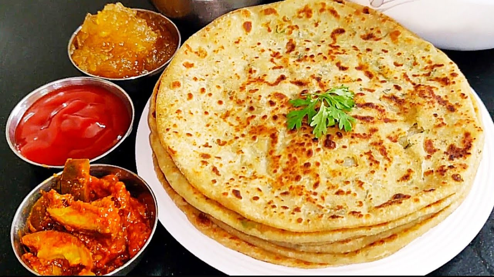

Aloo ke parantha
Recipe

Description: Aloo Ke Paranthe are classic Indian flatbreads stuffed with a spiced mashed potato filling. These paranthas are a popular and hearty breakfast or lunch option, known for their comforting and flavorful nature.
Ingredients:
- Whole wheat flour (for dough)
- potatoes (mashed)
- Cumin seeds
- Coriander powder
- Red chili powder
- Garam masala
- Chopped cilantro
- Salt
- Ghee or oil (for cooking)
Instructions:
- Prepare the Dough: Mix whole wheat flour with a pinch of salt and enough water to form a smooth dough. Let it rest for 15-20 minutes.
- Prepare the Filling: Combine mashed potatoes with cumin seeds, coriander powder, red chili powder, garam masala, chopped cilantro, and salt.
- Assemble the Paranthas: Divide the dough into small balls. Roll each ball into a small circle, place a spoonful of the potato filling in the center, and fold the edges to seal. Roll out the filled dough gently to form a paratha.
- Cook the Paranthas: Heat a skillet over medium heat. Cook each paratha with a bit of ghee or oil until golden brown on both sides, pressing lightly to ensure even cooking.
- Serve Hot: Enjoy with yogurt, pickles, or chutney.